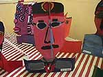
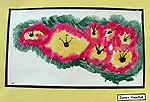

Organisational planning
Programme development
- All staff chose their own media or particular art focus and a New Zealand artist or style.
- Individual classrooms subsequently produced the work that was motivated or influenced by these New Zealand artists: year 1 - Pamela Woolfe and Royce McGlashan, Year 2 -- Fatu Fe'eu, Year 3/4 - Ingrid Banwell and Tom Burnett, Year 5/6 - Richard Killeen and Louise Henderson.
- The coordinating visual arts teacher made sure that a range of visual arts forms/media and topics would be included by asking staff to consider the following:
- What learning experience would they plan for the students?
- What media did they plan to use?
- What would their needs be, for example, materials?
- The visual arts teacher supported the classroom teacher in the purchase of materials and the sourcing of information about New Zealand artists from local advisors.
- The project evolved over time. In one case, when insufficient material was available on the original artist chosen, the teacher decided to use a local artist, Tom Burnett. Another teacher wanted to focus on cubism and a match was found in the work of Louise Henderson.
- The learning occurred during terms 1 and 2.
The exhibition
- Screens were hired for the exhibition, which was mounted in the school hall. Classroom teachers were responsible for displaying the work of their class.
- Space was allocated before the exhibition, according to the particular needs of each class. Tension wires were set up on the walls with the help of the caretaker, so the work could hang without sagging.
- The exhibition was planned to coincide with parent interviews and was promoted to the wider community in various ways including coverage in the local paper.
- The exhibition was open to the local community and parents from 2.00- 7.00pm on a Tuesday, Wednesday, and Thursday.
Budget considerations
- The budget for materials was from the normal arts curriculum allocation.
- The board of trustees financially supported this arts initiative by providing extra funding for mounting materials, display boards, glue sticks, and backing card, in order to ensure a high standard of presentation.
|

"We had all of terms one and two to focus on our art. The important thing was that we didn't make it an intensive. It was to be part of the normal curriculum".
Jackie James
|

|